Sportsball
This is my progress blog on this game that i decided to make.
last updated : 20/08/2018
Back To Main Page
last updated : 20/08/2018
Back To Main Page
Septemberball Update Hype Post #1
Just a short blog post here, as a put up some new showcases on my Youtube. Consider this all a hype post for the next update.
I call this the "Bee Keeper" boss due to me a mixture of referencing prior ideas in development, and a tiny bit of laziness about changing the scene name.
The main basis of this boss is that the player hurts the boss by making it throw itself into the lava covering the sides of the level. The idea from this level came from some messing around with rigidbodys in the scripts, more with the emphasis on looking cool rather than actually doing something.
And now, more importantly, i've added the option to have a console running in your games. This allows players to affect the game in real time without having to use the spectator mode. I've only showcased a couple of commands here, but when the update hits i'll have the full list out!
Love, Callum
Paintball & Memories Part 2
Alright, again it's here later than I wanted it to be, but here's part 2 of the Paintball & Memories update post! Featuring A New Update!
I've made this post easier on everyone (including myself) by recording some footage of the new features & older features into a couple of showcase videos, which you can check out below!
The other thing i'll mention in this post is file editing through the save files. I mentioned it a bit in the last post with the tutorial on how to add songs into the game. These next tutorials will follow the same priniciple, all taking place in the "SportsballSaves" folder.
Profile Adjustments
If you have opened the game before, you should have a profile.txt. If you change the string on the first line, you can change the name of your profile.
Also, you can add a line with a direct link to an image, and it'll become your new profile Image!
Add Custom Team Materials
1. Go into your "SportsballSaves" folder, which will most likely be in your documents
2. Create a .txt file called "AddUniforms"
3. Write a line with this format "JeseryImage;BannerImage;PaintSplatImage;TeamName"
4. Files should be in .png or .jpg format preferably
I'm also working on some other texture changes in game, However it'll take a while until these are implemented.
Last and kind of least, I've added three new jerseys. "Freebee Network", "France" & "Japan". Have Fun
Love, Callum
Paintball & Memories Part 1
Okay, so it's been a while since my last blog post, and I'm going to quickly address this before I go into the update. First off, the project has not been abandoned. Just progress has been slowed for a couple of reasons:
1. Personal interest died on this project for a little period
2. A somewhat busy schedule
3. Something that I hope i'll be able to talk about in the upcoming months.
Alright Update Time. Firstly I want to mention that i've created a bit more "Experimental" music. Whilst most of the music is just inside jokes with friends or me using a fidget spinner on a ukulele (Phone Call), there is a legitimate reason i had for creating more music files. (Although in hindsight I probably should've used actual music)
1. Some of the music files are added in to the game's official soundtrack
2. In the new Settings menu, the menu's music volume can now be changed
3. You can now add custom songs into the game.
To add a song into the game, you must do as follows:
1. Go into your "SportsballSaves" folder, which will most likely be in your documents
2. Create a .txt file called "AddedSongs"
3. Write a line with this format "url;song-name;song-artist;song-details"
e.g. C:\\Users\\Callum\\Desktop\\Sportsball 2 Electric Boogaloo\\Sportsball 2 Electric Boogaloo\\05 The Ballad Of Jackson Cheyne.wav;The Ballad Of Jackson Cheyne;Ritalin4Kidz;2018, Sportsball 2 Electric Boogaloo
4. Files should be in .wav format
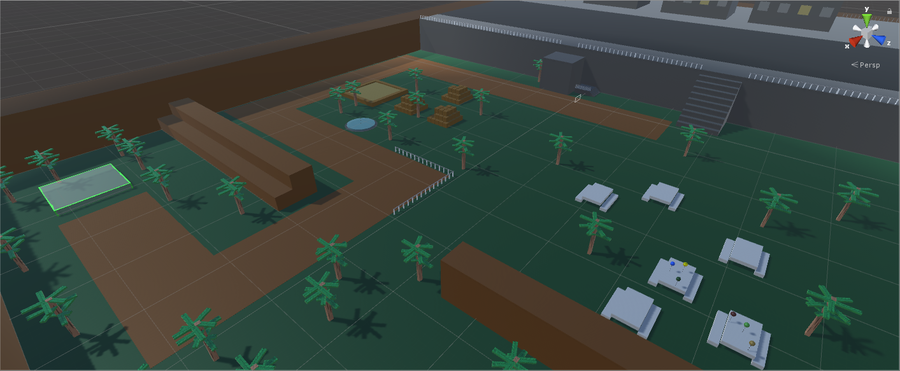
New Maps + Paintball Mode Update:
3 New Maps (Ruskville Paintball, Sector 12b, Mountain City Park (CTF))
Paintball mode has been updated as well, so that instead of just being a simple deathmatch, there is now an objective that can make the rounds play out much differently. A bomb can be picked up and planted in the plantzones, which will give the other team a set amount of time to defuse it. If the bomb gets defused, the defusing team wins. If the bomb "explodes", the planting side wins the round.
There's still a lot more to cover in this update, Including more ways to modify your game outside of playing. I'll cover all these in the next blog post, which hopefully I put out soon. Until then, here's a quick run-down of what else is in this update:
-Saving
-Keyboard Controls
-New Player Types
-End Of Game Stats Screen
-Player Profiles
-Changable Look Sensitivity
-Game Mutators (Low gravity, etc.)
-Probably some other stuff im forgetting.
Happy Exploring for now! Love, Callum
Patch Notes 04/06/2018
-Fixed West Townie Spawns
-Fixed Replay UI Wrong Place
-Paint on the face now disappears after restart of play
-Added Titles to my blog posts.
04/06/18
Spectator Mode Update
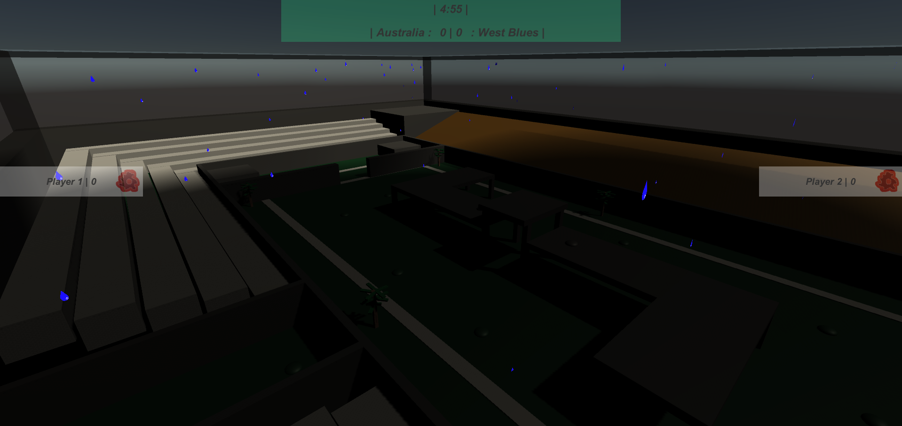
The spectator update is finally here! I've been working on this feature for the past two months on & off and I'm so happy to finally be releasing it alongside this new update (Alpha_050). So I've got a lot to go through in this post, and i'm probably going to miss some things, so hopefully I cover all the most important parts.
So first thing i'll cover is just a quick music update. So if you bothered to go through that 3 mins of musical shitposting, you'll probably realise that i've added some more music into the game. The more major in the music updates however, is the pop-up that now appears when a new song starts.
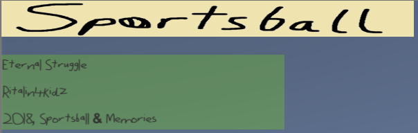
An example of the pop-up.
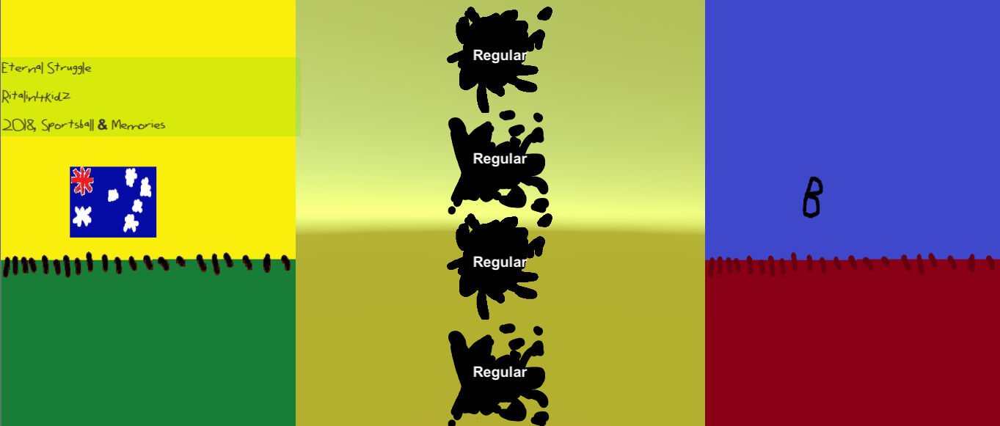
Next up is the new ready up screen. Once players have selected the map, they are then moved to the this new screen, in which the players can choose:
- What team they're on (although if more than 2 on one team, it will auto balance)
- Their team's material
- Their player class
Everything else in the ready screen has remained the same.
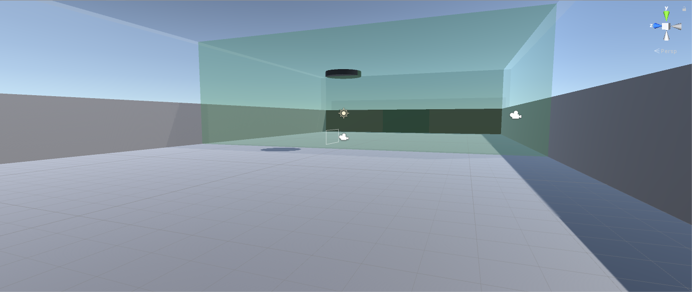 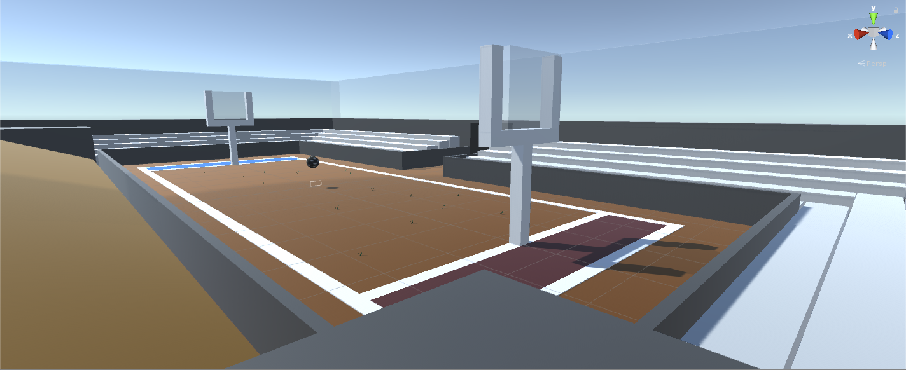
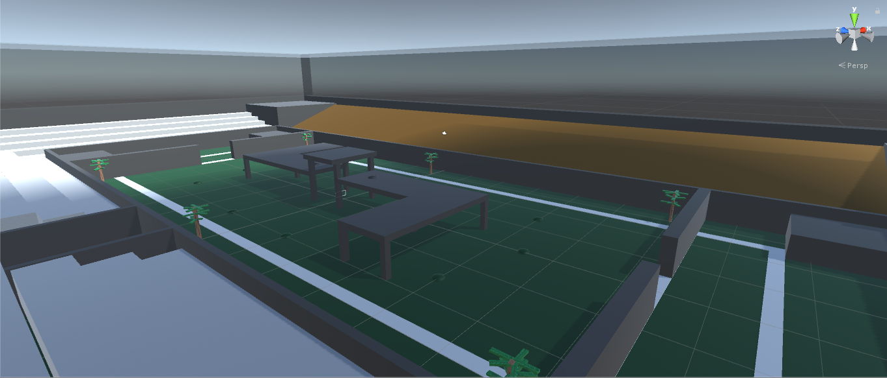
4 New Maps! (2 for Caulbury). So before I go into a bit of detail for these new maps, I'm just gonna talk about the direction of this game past & future. Back when i started this project at around the begining of march, there was only three maps, all of them being the soccer mode. The biggest difference in any of the maps was that "West Townie Oval' had boundaries. It was teased a little in the previous update with 'Magpie Stadium', which had two different maps. One for Euro Sportsball & one for Aussie Sportsball. Since adding in 'Dam City Dam', I haven't made a map that incorporated the original sportsball mode. Honestly, I'm not sure if i'll make another original sportsball map at this point. Despite being 50 alpha builds deep into this project, I'm still unsure about what direction I want to move in, or even what the best mode to work on is. So to wrap this up, in updates from now on, you're going to see a lot more modes for sportsball, and probably see older modes get neglected a lot. Anyways:
Air Hockey:
This a simple new map/mode similar to the original soccer based mode. The biggest difference however is that the ball is now a puck, and there's a wall in the middle that only the puck can get through. It's a pretty simple map, but I'm hoping it plays well enough to be fun.
Ruskville:
Ruskville is a new addition to the Euro Sportsball map pool. It's layout is incredibly similar to Magpie Stadium, execpt the trees have been removed. The map is intentionally empty on the actual playing field so that this map can act as the vanilla Euro Sportsball map.
Caulbury:
Caulbury is the first map with a weather effect. Everytime this map is played, rain will spawn. Rain has no physical effect on the players or ball. What does however, are the mines scattered on the ground. The mines act as a launchpad once collided with, and disappear for 5 seconds after use. Now in the picture you will notice there is a lot of clutter in the map, however this is not in the Euro Sportsball mode of the map.
Paintball Mode:
Caulbury has a paintball mode version as well. Paintball mode is the newest game mode in Sportsball, being the first mode to not utilize a ball or puck. Currently paintball mode is pretty simple:
- Certain amount of players per side
- Each round has a certain amount of time
- Once a player is shot, they're out for the round
- If a team has no players left, the other team wins the round.
- If time runs out, the team with the most players left wins.
- If same amount of players, round is tied & replayed
- First to 8 rounds, or 7-7.
This mode is still being worked on, so you'll notice some things iffy at the moment, however it is in a state where the game can be won.
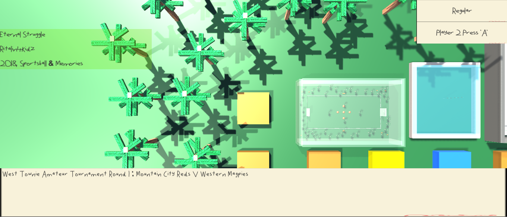
Continuing the trend of new modes. A MASSIVE new mode has been added in the form of the Tournament/Story mode. Playable with 1 or 2 players, the Tournament mode follows you on a path to become the greatest Sportsball player of all time. You progress in this mode by winning each game & moving onto the next.
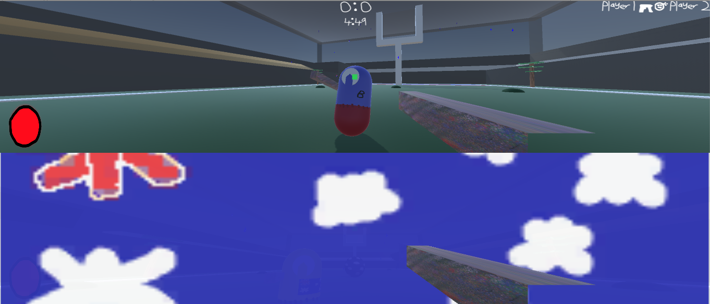
Also now, you'll notice a feed appearing in the top right of the screen.
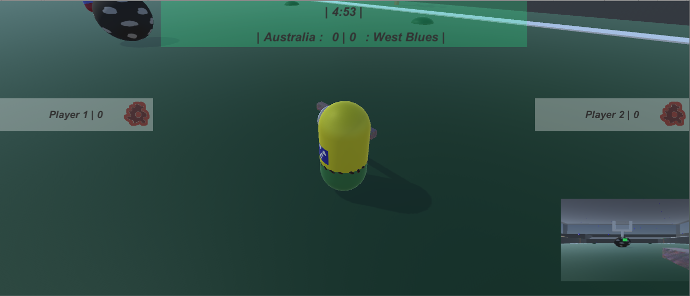
Last but not least, the spectator mode. Selectable in the game options mode, the spectator mode is a mode I built for recording purposes. The window is set up on the second screen, so it is recommended to have two monitors to run this mode.
Honestly there is way too much going on in this mode alone to write, so I've put all the information in a Pdf, which you can access below.
Happy Playing
02/06/18
Click Here For Spectator Info
May Mega Update
So it's a been a while, and the new update is finally here. Now i want to quickly mention the reason for the delay before i quickly go into what this update has. So i'm working on a spectator window for the game for reasons of better recording and such, which has been the main focus for the past month. This was intended to come out in this update, however a game-breaking bug is being caused by it, so this will come out whenever that is fixed.
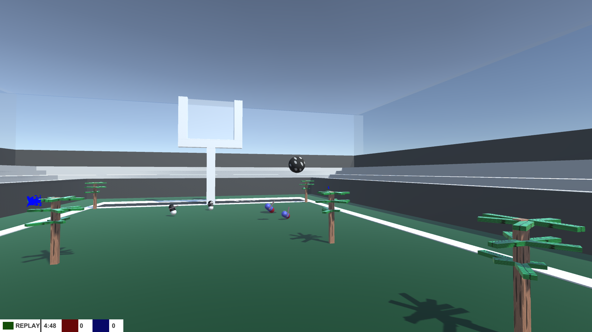
Anyways, time to quickly round off what this update has, the new build should be available to download from the main page.
- Two new maps, Dam City Dam & Magpie Stadium (Two Different Versions, Both A Different Mode Of Sportsball)
- Euro Sportsball, 4 Points when you touchdown the ball in the opposition endzone and 1 point when through the opposition goals
- Aus Sportsball, 1 point on left and right goals and 6 for the middle goals
- On resume of play, game no longer instantly jumps in
- More options in free play, such as game length, time of day & if extra time will be played
- improved main menu
- Character classes, (Regular, Gunner, Scout, Painter, Psychic), all which come with a different special move and stats to play around with.
The video above showcases some of the update, happy playing.
13/05/18
April Update
Hooray for new updates!!! There's a bit to go through here so im just gonna rush through it. First off, i got some updated gameplay footage ready, which you can see above. Secondly i got rid of the season mode. Because it was broken as hell. I've replaced it with two brand new modes however:

Training/Mission mode are quite similar. With the main difference being that you can fail in mission mode. Selecting a map works the same way that Free Play does, and the premise of these modes are for practice and to teach the players about certain techniques you can do in the game.


I've also added some sounds into the game, which is better viewable in the video above. Lastly, I've added a new map into the game.

I've also added in a couple new jerseys and some other small adjustments here and there.
09/04/2018
Aesthetics Update

Here it is, my first major update. The Aesthetics update. This build is now available for download. In this post i will run through some before and afters of the art in this game and some of the new additions. The first is obviously the new jerseys, below is a before and after of how they look in game.


There is currently 13 different jerseys that can be selected in the ready up screen. Each jersey comes with a unique paint splat pattern. Splat patterns now only last for 15 seconds before they are destroyed.

The Magpies' Jersey paint splat pattern
The next change is the ready screen, which has had a little update to include customization & become a little more clearer.


The last big change to talk about is the new main menu screen. This new screen removes the boring bland yellow background and adds footage of Ai shooting a sportsball repeatedly & infinitely. There's also now scrolling news text at the bottom, which will be used to annouce updates and such.


There's also a lot more smaller art updates that you'll notice whilst playing. The next thing that i want to talk about is the new map "Sector 14a".

"Sector 14a" is a small inclosed map which hopefully shakes up the gameplay enough to become interesting. Firstly you'll notice that the goals are higher up then usual. This will hopefully encourage use of the maps main feature, "Launchpads". Yep, launchpads, step on one of these beautys and you'll be sent flying upwards, which you can use to access higher places.
Lastly, i've added map intros the game, so that when you load up a map you're not instantly thrown into the game.

That's it for now, i'll try to get a video up soon, which will show the changes from the first public build i had available. Until then, happy playing, and have fun checking out all the new art in the game.
03/04/2018
A Little Splash of Colour

So as this picture suggests i've updated the art on the players. I've also added a bit of customization, in which you can choose what colour your team is before you play in "Free Play" mode. I've also got some other aesthetic changes to show later on. I'll have a new video up in a week or so which will showcase a majority of the changes since the first protoype.
Oh yeah, and im also working on a new map, which will incorporate new gameplay elements, so stick around for that.
29/03/2018
New Sportsball Build

Hooray two updates in a day! First thing of note is that i've updated the download link to have (a.o.w) the most updated build of the game that possibly exists. Secondly, since the last update i've tweaked the season mode a little, as well as adding in two maps into the map selections (one new, one old).
27/03/2018
Welcome To Sportsball
Welcome to the official Sportsball blog post page. This is my first blog post but there's been already been quite a bit of progress made in the game, so i'm going to quickly do a run down of what the game currently has:
-Support for 1-4 players (all must be using controller though)
-AI players (however a.o.w they are pretty simple)
-Free Play mode with two choosable maps
-The begining of a season mode
-A Replay system for when goals are scored
-A MVP system
-Paint splats
So far the game is very basic in it's art and has no sounds. However expect that sometime later this will change. Just probably not for a while. a.o.w. The majority of focus for development is in improving both the AI and season modes.
Anyways, i'm not going to make a large post here. I hope that i stick to this game enough to make something great. I'll update the download link once i have a build i deem publishable. Until then, the current download link will have a earlier build, which will require two players (both using controllers) to play.
Love, from Callum 27/03/2018